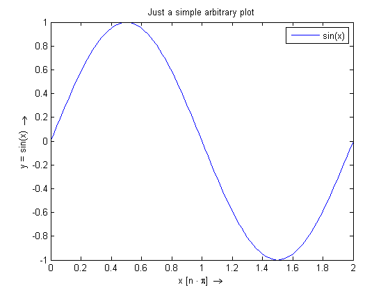
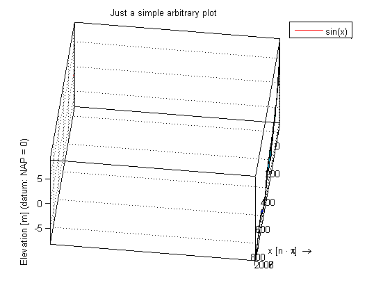
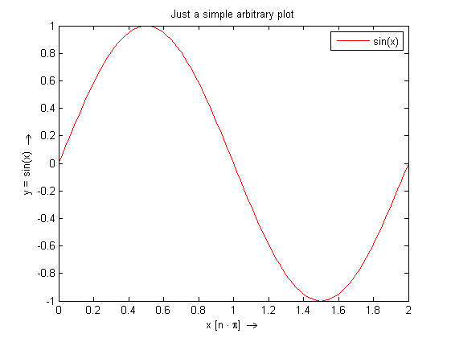

generate data to be plotted
x = 0:2*pi/100:2*pi; y = sin(x);
plot data
figure(1) ph = plot(x/pi, y, 'displayname', 'sin(x)');axis tight lh = legend(ph); title('Just a simple arbitrary plot') xlabel('x [n \cdot \pi] \rightarrow') ylabel('y = sin(x) \rightarrow')
save the plot
You may notice that the savename of the figure is derived from the mfilename from which the printFigure call is made.
printFigure
e:\Temp\printFigure_tutorial_Figure.png already exists Figure has been saved to <a href="e:\Temp\printFigure_tutorial_Figure_29.png">e:\Temp\printFigure_tutorial_Figure_29.png</a>
apply a minor change
For example change the line color from blue to red.
set(ph,'color','r')
save the plot again
You may notice that the savename of the figure has automatically recieved an additional number to ensure the naming stays unique. NB: this option can be disable by setting the 'permission' argument to 'overwrite'. All figures will then be saved using the same name.
printFigure
e:\Temp\printFigure_tutorial_Figure.png already exists Figure has been saved to <a href="e:\Temp\printFigure_tutorial_Figure_30.png">e:\Temp\printFigure_tutorial_Figure_30.png</a>